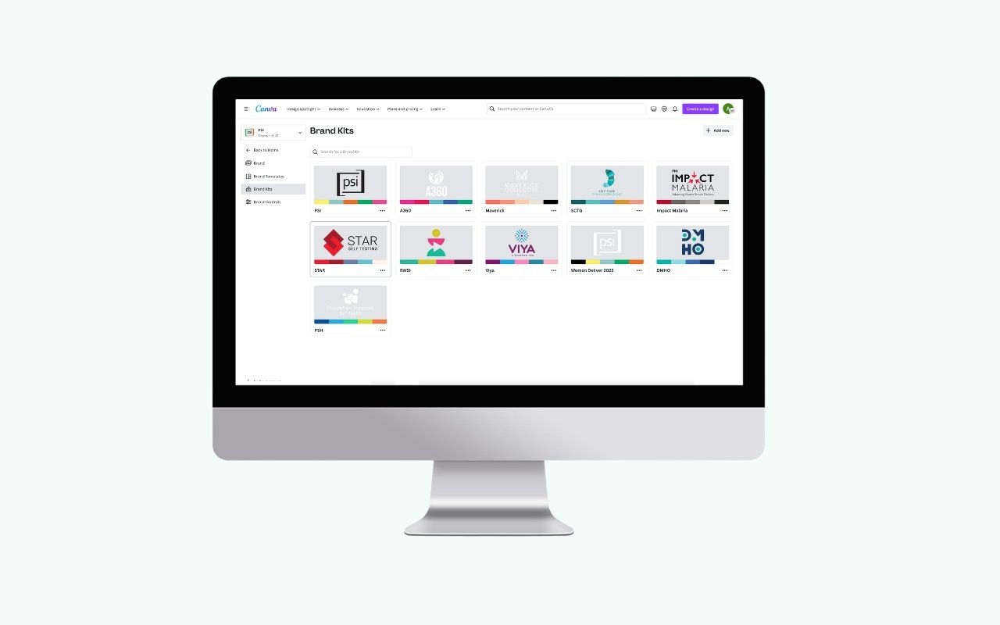
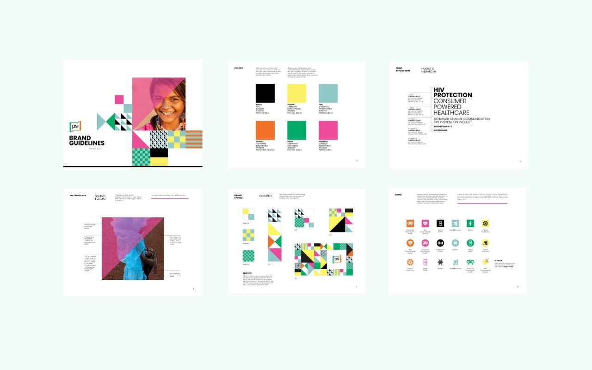

The problem
PSI is not one brand. It is a network: a parent organization, program brands like A360, STAR and Impact Malaria, and country offices from Cambodia to Nigeria, all producing materials continuously and almost none of it through a designer. The guidelines lived in a PDF, so logos drifted and palettes got approximated. Anything that needed to look official came to a small central team, which made us the bottleneck for a global network.
The approach
I treated the brand as a product to ship: an architecture, a distribution model, permissions, and users who needed onboarding.
Architecture
Eleven brand kits, one per brand, each carrying its own logos, palette, typefaces, photography and graphic elements. Logos, color values and typefaces are locked, because those are what break a brand when they drift. Layout, imagery and message stay open, because a family planning campaign in Kenya should not look like a malaria program in Cambodia.

Governance
Access is structured by group, mirroring how the organization actually works: by program, by department, by country office. A designer in the Nigeria office opens the tool and the right assets are already there. Nobody asks permission to be on brand, and nobody gets corrected afterward. The controls do the work review cycles used to do.

Enablement
A system nobody knows how to use does not exist. I ran training across the network, around 78 people, most of them not designers. I also led adoption of the written standards and tone of voice, rebuilding the template and presentation systems so the documentation and the software said the same thing. Requests run through a single intake and review workflow, so nothing depends on a side conversation.

Results
What the system produced
The real test of a brand system is its output. In 2025 it carried a full annual report campaign and an end-of-year advocacy campaign, each one idea extended across channels by more than one pair of hands. Both are below.
What I'd tell another creative leader
Build the training before you build more templates. I assumed a good enough system would explain itself and it did not. Adoption moved when I sat with teams and watched where they got stuck, which is also where I learned the templates people needed were not the ones I had assumed.
And decide early what you are willing to let go. A system that leaves no room for a country team to make something feel local gets abandoned quietly, and then you have neither consistency nor trust.